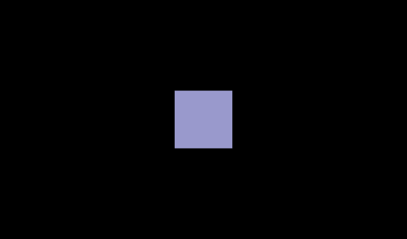
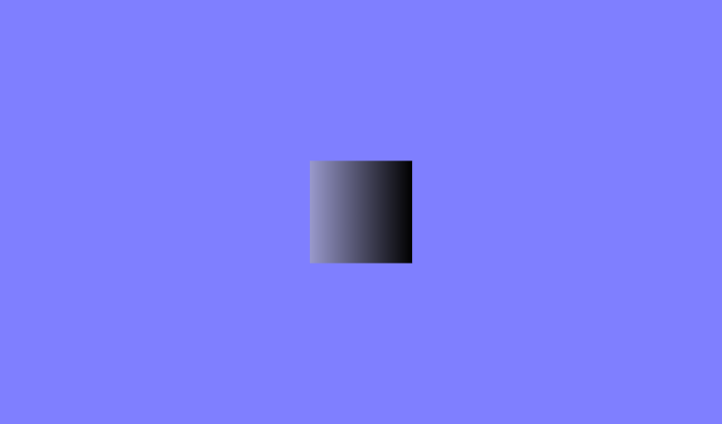
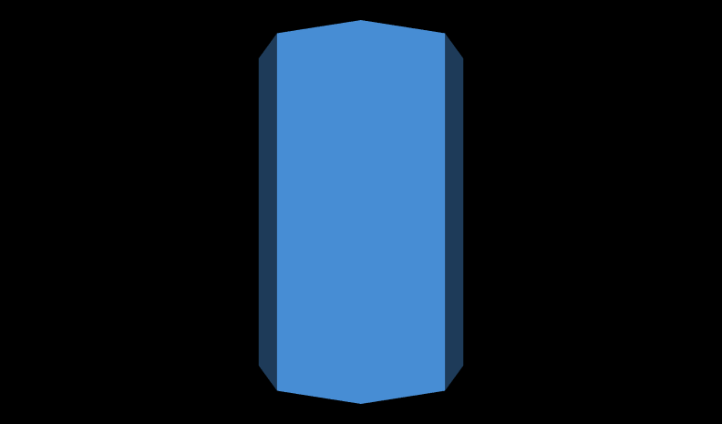
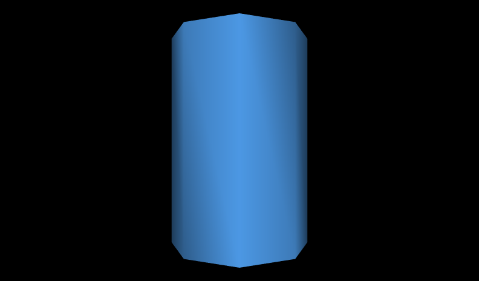
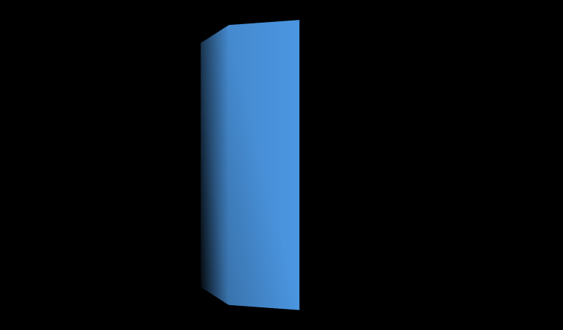
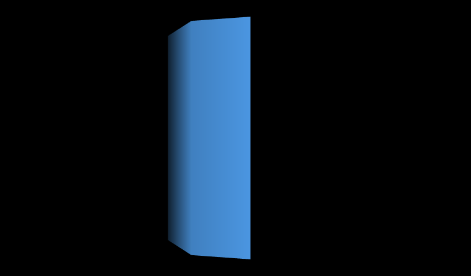
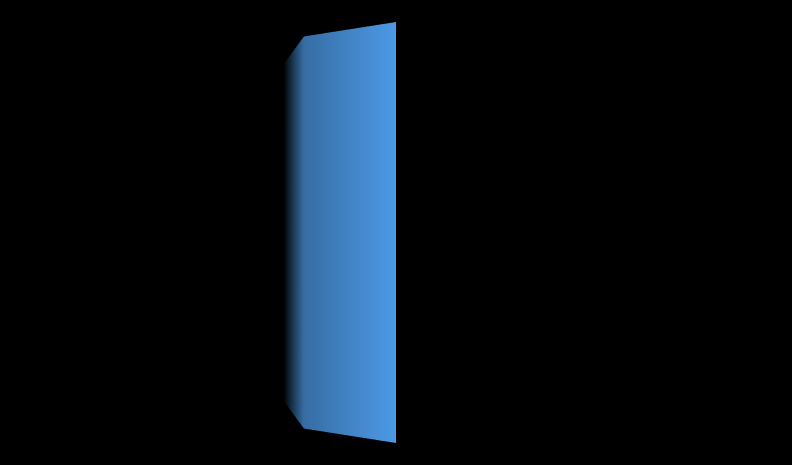

|
When shaded, the faces on a shape are obvious.
Creating a smooth shape may require a large number of small faces.
An alternative is to instead use smooth shading to create the illusion of a smooth shape, but with a smaller number of faces.
The Normal node lists normal vectors to use for parts of a shape which can change shading.
These are used as the value of the normal field, and normal index values select which normals to use (similar to color index values).
Ordinarily the creaseAngle field controls faceted or smooth shading.
Normals override the normal effect of the creaseAngle value.
The normalPerVertex field selects normal per face/grid square or normal per coordinate.
The NormalInterpolator node converts time values to normal values for animation effects.
These X3D scenes are adapted directly from the
original VRML 2.0 Sourcebook chapter examples.
Also available:
Introduction to VRML97 SIGGRAPH98 course notes.
|


![[1] Figure19.21NormalSquare.x3d - Normal square, solid=false means visible on both sides](_viewpoints/Figure19.21NormalSquare.x3d._VP_Normal_square,_solid=false_means_visible_on_both_sides.png){kind=link}
![[2] Figure19.21NormalSquare.x3d - (default X3D view from 0 0 10)](_viewpoints/Figure19.21NormalSquare.x3d._VP_Default_viewpoint.png){kind=link}
![[3] Figure19.22NormalSquareShaded.x3d - Square with artificial normals, thus shaded. Careful, solid=true means visible only on one side!](_viewpoints/Figure19.22NormalSquareShaded.x3d._VP_Square_with_artificial_normals,_thus_shaded._Careful,_solid=true_means_visible_only_on_one_side!.png){kind=link}
![[4] Figure19.22NormalSquareShaded.x3d - (default X3D view from 0 0 10)](_viewpoints/Figure19.22NormalSquareShaded.x3d._VP_Default_viewpoint.png){kind=link}
![[5] Figure19.23HalfColumn.x3d - Half column. Careful, only one side!](_viewpoints/Figure19.23HalfColumn.x3d._VP_Half_column._Careful,_only_one_side!.png){kind=link}
![[6] Figure19.23HalfColumn.x3d - (default X3D view from 0 0 10)](_viewpoints/Figure19.23HalfColumn.x3d._VP_Default_viewpoint.png){kind=link}
![[7] Figure19.24aHalfColumnCreaseAngle.x3d - Half column. Careful, only one side!](_viewpoints/Figure19.24aHalfColumnCreaseAngle.x3d._VP_Half_column._Careful,_only_one_side!.png){kind=link}
![[8] Figure19.24aHalfColumnCreaseAngle.x3d - (default X3D view from 0 0 10)](_viewpoints/Figure19.24aHalfColumnCreaseAngle.x3d._VP_Default_viewpoint.png){kind=link}
![[9] Figure19.24bTwoHalfColumnsCreaseAngleSeam.x3d - Two half columns - note visible seams where each side meets](_viewpoints/Figure19.24bTwoHalfColumnsCreaseAngleSeam.x3d._VP_Two_half_columns_-_note_visible_seams_where_each_side_meets.png){kind=link}
![[10] Figure19.24bTwoHalfColumnsCreaseAngleSeam.x3d - (default X3D view)](_viewpoints/Figure19.24bTwoHalfColumnsCreaseAngleSeam.x3d._VP_Default_viewpoint.png){kind=link}
![[13] Figure19.25bTwoHalfColumnsNormalsSeamless.x3d - Two half columns - no more visible seams where each side meets](_viewpoints/Figure19.25bTwoHalfColumnsNormalsSeamless.x3d._VP_Two_half_columns_-_no_more_visible_seams_where_each_side_meets.png){kind=link}
![[14] Figure19.25bTwoHalfColumnsNormalsSeamless.x3d - (default X3D view)](_viewpoints/Figure19.25bTwoHalfColumnsNormalsSeamless.x3d._VP_Default_viewpoint.png){kind=link}
![[15] Figure19.26NormalShadedElevationGrid.x3d - Shaded (but flat) ElevationGrid](_viewpoints/Figure19.26NormalShadedElevationGrid.x3d._VP_Shaded_(but_flat)_ElevationGrid.png){kind=link}
![[18] Figure19.27SquareFaceAnimatingNormals.x3d - Other side - note difference in animated shading](_viewpoints/Figure19.27SquareFaceAnimatingNormals.x3d._VP_Other_side_-_note_difference_in_animated_shading.png){kind=link}
![[19] Figure19.27SquareFaceAnimatingNormals.x3d - (default X3D view)](_viewpoints/Figure19.27SquareFaceAnimatingNormals.x3d._VP_Default_viewpoint.png){kind=link}